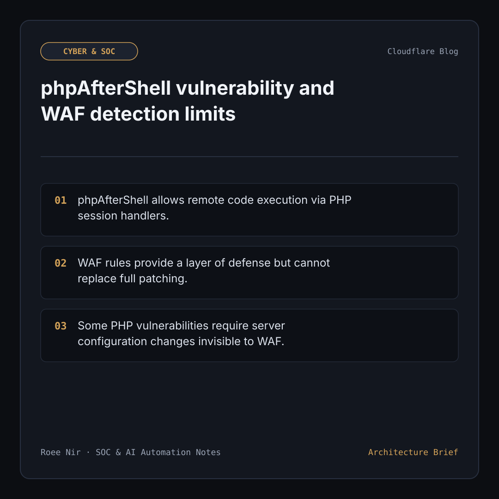

MANUAL PUBLISH PACK · Never auto-posted to LinkedIn without your click.
1. Visual Card (1080x1080)

2. פוסט מוכן + תגובה ראשונה
לא כל מתקפת RCE קריטית תיתפס במלואה אך ורק ברמת ה WAF המערכתי. כשחברת depthfirst חשפה את פגיעות phpAfterShell במסגרת טיפול בברירת המחדל של PHP, ראינו שוב עד כמה חשוב להבין את מגבלות שכבת ההגנה החיצונית. בפועל, מתקפות כאלו מנוצלות דרך נתיבים שלא תמיד עוברים תחת העין של חוקי ה WAF הקיימים. בתכלס, עבור צוותי ה SOC והאבטחה ביום־יום, זה אומר שחוקי חסימה אוטומטיים הם בלם ראשוני קריטי, אבל הם לעולם לא תחליף לעדכון גרסה מלא והפעלה מחדש של השרתים. המערכות שלנו חייבות לשלב בין ניטור אירועי אבטחה בזמן אמת לבין מעקב הדוק אחרי פאצ'ים ברמת התשתית כדי לסגור את הפרצות האמיתיות. #CyberSecurity #SOC #WebSecurity #VulnerabilityManagement #Cloudflare
תגובה ראשונה (לשמירה על חשיפה אורגנית):
לקריאת המחקר והפירוט הטכני המלא מתוך Cloudflare Blog: https://blog.cloudflare.com/phpaftershell-waf-protection/